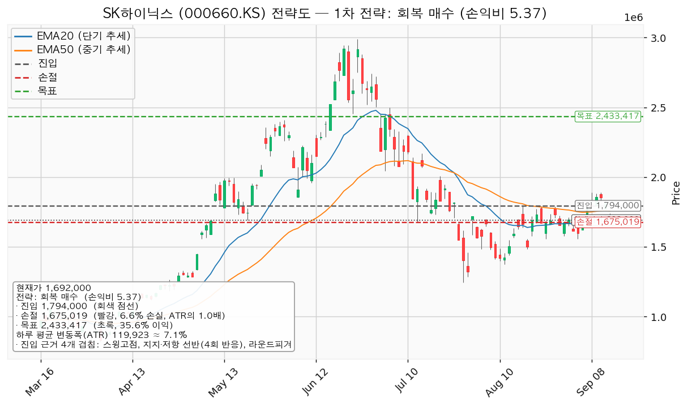
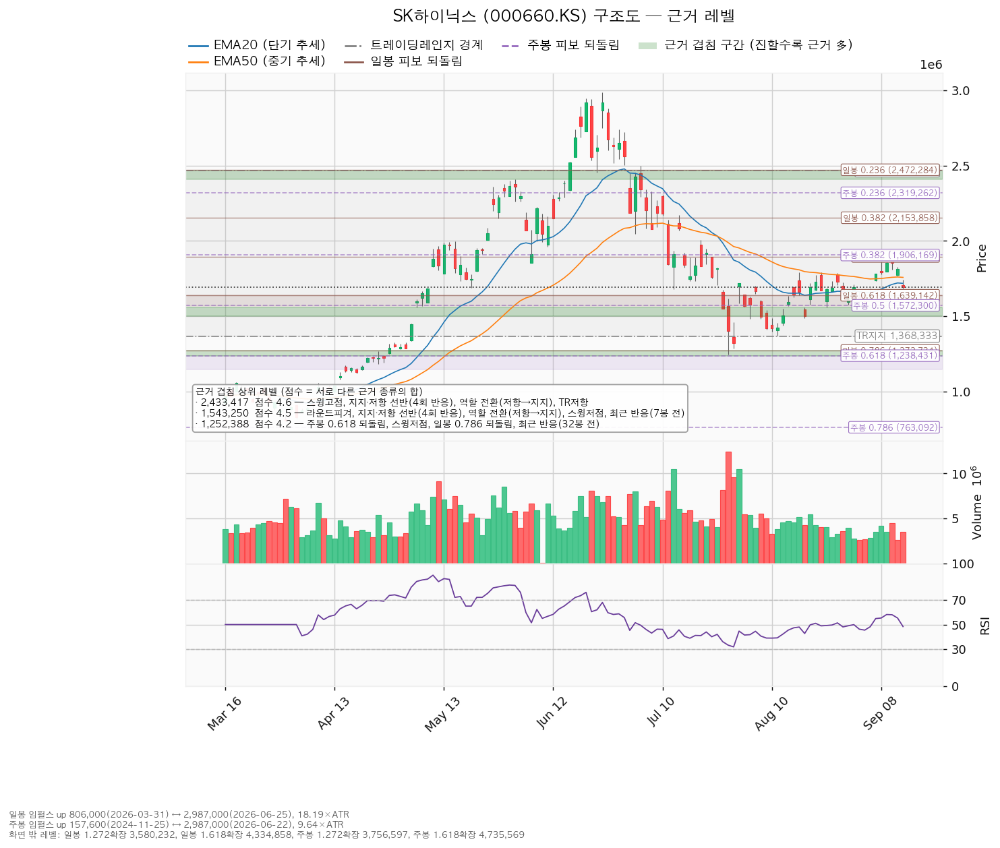
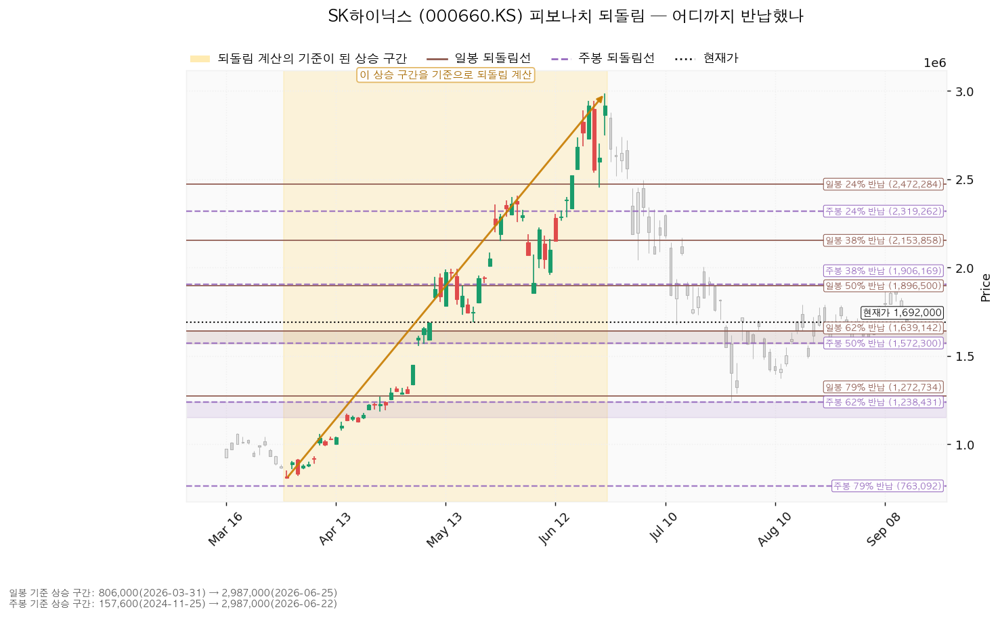
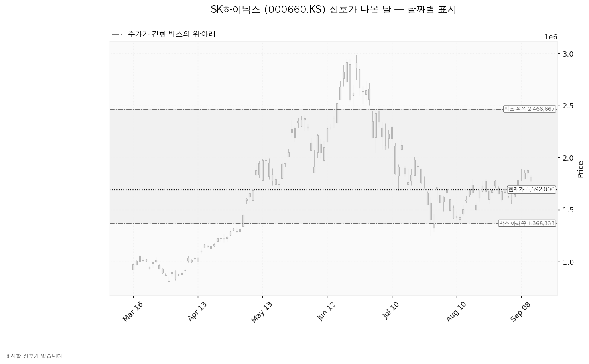

SK하이닉스(000660.KS)는 D램·HBM·낸드 등 메모리 반도체를 설계·생산하는 한국 기업이며, 실적이 메모리 가격 사이클에 크게 연동됩니다.
| 구분 | 가격 | 판정 방식 | 현재가 대비 | 상태 |
|---|---|---|---|---|
| 회복선 | 1,721,524원 | 일봉 종가로 회복한 뒤 되돌림에서 지지되는지 | +1.74% (0.25 ATR) | 회복 대기 |
| 집행 손절 | 1,675,019원 | 도달 시 즉시 청산 — 1,794,000원에 신규 진입한 경우에만 유효하며, 미진입 상태에서는 아무 의미가 없습니다 | -1.00% (0.14 ATR) | 미진입 |
| 관망 종료 기준 | 1,639,142원 | 일봉 종가가 아래로 마감 / 또는 2026-10-27 실적 | -3.12% (0.44 ATR) | 유지 중 |
| 확인선 | 2,433,417원 | 일봉 종가 돌파 후 되돌림에서 지지 확인 | +43.82% (6.18 ATR) | 미돌파 |
| 폐기선(구조) | 1,368,333원 | 이탈 → 3거래일 내 회복 실패 → 반등이 저항으로 확인 | -19.13% (2.70 ATR) | 유지 중 |
직전 리포트 이후 거래일은 2026-09-14 하루뿐이며, 그 하루에 종가가 1,812,000원에서 1,692,000원으로 -6.62% 밀렸습니다. 같은 날 코스피는 -3.30% 였습니다.
① 당시 트리거의 성적표 — 진입 조건은 충족됐고, 목표·손절 어느 쪽에도 닿지 않았습니다.
| 직전 리포트가 건 가격 | 이후 실제 | 판정 |
|---|---|---|
| 되돌림 진입 1,707,740원 (장중 도달) | 9월 14일 저가 1,686,000원으로 관통 | 충족 |
| 목표 1,891,501원 (장중 도달) | 9월 14일 고가 1,740,000원 | 미충족 |
| 집행 손절 1,609,278원 (장중 도달) | 9월 14일 저가 1,686,000원 | 미충족 |
| 관망 종료 1,639,142원 (종가 이탈) | 9월 14일 종가 1,692,000원 | 미충족 — 유지 중 |
| 폐기선 1,368,333원 (종가 이탈) | 9월 14일 종가 1,692,000원 | 미충족 — 유지 중 |
직전 계획대로 1,707,740원에 진입했다면 현재 평가손은 -0.92% 이고, 그 계획의 손절 1,609,278원은 아직 살아 있습니다. 다만 장부에 그 진입에 해당하는 매수 기록은 없습니다 — 기록된 2주는 7월 1일 매수분입니다. 진입 조건이 충족됐는데 집행이 없었으므로 계획과 집행이 벌어진 상태로 적어 둡니다.
② 좌표의 이동 — 박스를 판정한 창이 40봉에서 90봉으로 바뀌면서 좌표 대부분이 교체됐습니다.
하루 만에 -6.62% 밀리면서 40봉 창의 박스 체류율이 95%에서 75%로 내려갔고, 엔진이 세 창을 다시 시험해 체류율 86.7%인 90봉 창을 골랐습니다. 박스가 1,368,333~1,863,333원에서 1,368,333~2,466,667원으로 위쪽이 넓어졌고, 그 결과 확인선과 목표가 통째로 위로 이동했습니다.
| 항목 | 2026-09-11 | 2026-09-14 | 왜 움직였나 |
|---|---|---|---|
| 현재가 | 1,812,000원 | 1,692,000원 (-6.62%) | 하루 만에 이동평균 두 개를 모두 아래로 내줌 |
| 하루 평균 변동폭(ATR) | 119,455원 | 119,923원 (+0.39%) | 사실상 같습니다 — 주가의 7.09% |
| 박스 | 40봉 / 1,368,333~1,863,333원 | 90봉 / 1,368,333~2,466,667원 | 40봉 창의 체류율이 95% → 75%로 내려가 90봉 창으로 교체 |
| 회복선 | 1,543,250원 | 1,721,524원 | 가격이 아래로 내려오면서, 바로 위 이동평균·선반 겹침(3.7점) 자리로 교체 |
| 확인선 | 1,707,740원 | 2,433,417원 | 박스 상단이 올라가면서 겹침 4.6점짜리 최상단 저항으로 교체 |
| 대표 셋업 | 되돌림 매수(손익비 1.87) | 회복 매수(손익비 5.37) | 되돌림 매수는 진입가가 현재가 위로 올라가 성립하지 않고, 저항 회복형만 남음 |
| 셋업 진입 | 1,707,740원 | 1,794,000원 | 현재가 아래 매수 자리가 사라지고, 위쪽 스윙고점·라운드피겨 겹침(3.5점)으로 이동 |
| 셋업 손절 | 1,609,278원 | 1,675,019원 | 손절을 밀어내는 기준 구간이 1,639,142~1,678,000원에서 1,705,000~1,757,895원으로 올라감 |
| 셋업 목표 | 1,891,501원 | 2,433,417원 | 박스 상단 확대에 따라 목표도 겹침 4.6점 자리로 이동 |
| 구조 증명도 | 선취형 0.7 (최저) | 회복 확인형 1.0 (최고) | 미리 사는 방식에서, 저항 회복을 확인한 뒤 사는 방식으로 바뀜 |
| 신호 | 속임수 상승 3건 | 없음 | 박스 상단이 1,863,333원에서 2,466,667원으로 올라가 9월 8~10일의 되밀림이 박스 안쪽 움직임이 됨 |
| 국면 후보 | 미확정 | 미확정 | 같습니다 |
③ 판단이 바뀌었는지 — 결론은 관망으로 같고, 사는 방식이 반대로 바뀌었습니다. 직전에는 현재가보다 5.75% 아래로 눌릴 때 미리 사는 계획이었고, 이번에는 현재가보다 6.03% 위로 회복할 때 확인하고 사는 계획입니다. 가격이 진입 자리를 관통해 더 내려갔기 때문에 같은 자리가 매수 후보에서 저항으로 바뀐 것입니다. 직전 리포트가 "장부에 이 종목의 체결 기록은 없습니다(보유 수량 0주)"라고 적은 것은 그 시점의 장부 기준으로 맞았고, 7월 1일 매수분 2주는 2026-09-14에 장부에 등록됐습니다. 정정할 오류는 아니며, 새로 들어온 사실입니다.
| 항목 | 값 |
|---|---|
| 보유 수량 | 2주 (최초 매수 2026-07-01) |
| 평단 | 2,132,667원 |
| 평가액 | 3,384,000원 |
| 평가손익 | -881,334원 (-20.66%) |
이 2주는 이번 셋업과 무관한 기존 포지션입니다. 이번 셋업의 집행 손절 1,675,019원은 1,794,000원에 새로 진입했을 때의 값이므로 평단 2,132,667원의 보유분에 그대로 적용하지 않습니다. 기존 보유분은 아래 세 시나리오의 행동 규칙을 따릅니다 — 횡보 지속·상승 전환에서는 보유 유지, 시나리오 폐기(1,368,333원 3단계 판정)에서 정리합니다. 각 가격에서 이 2주의 손익은 다음과 같습니다.
| 가격 | 2주 기준 손익 | 평단 대비 |
|---|---|---|
| 셋업 목표 2,433,417원 | +601,499원 | +14.10% |
| 현재가 1,692,000원 | -881,334원 | -20.66% |
| 폐기선 1,368,333원 | -1,528,667원 | -35.84% |
| 항목 | 값 |
|---|---|
| 현재가 | 1,692,000원 (전일 대비 -6.62%) |
| 당일 고가 / 저가 | 1,740,000원 / 1,686,000원 |
| EMA20 (최근 20일 평균 흐름) | 1,718,202원 — 현재가는 -1.53% 아래 (0.22 ATR) |
| EMA50 (최근 50일 평균 흐름) | 1,757,895원 — 현재가는 -3.75% 아래 (0.55 ATR) |
| RSI(14) (0~100, 최근 상승·하락 강도) | 48.35 |
| ATR (하루 평균 변동폭) | 119,923원 = 주가의 7.09% |
| 국면 | 횡보 레인지(구조 유지 — 하단 사수 조건부) |
| 6월 고점 2,987,000원 대비 | -43.35% |
현재가는 EMA20·EMA50을 하루 만에 모두 아래로 내준 자리에 있습니다.
어느 구간을 보고 박스로 판정했는가. 조회된 일봉은 727개이며, 40·90·180봉 세 창을 모두 시험해 최근 90봉(약 넉 달 반) 을 골랐습니다. 이 창에서 종가가 박스 안에 머문 비율은 86.7%, 박스 폭은 하루 평균 변동폭의 9.16배입니다. 40봉 창도 유효 범위 안이지만 체류율이 75%로 떨어졌고(직전 산출에서는 95%였습니다), 180봉 창은 가격이 한 방향으로 흘러간 정도(0.615)가 커서 박스로 인정되지 않았습니다. 박스 폭 9.16배는 실행 기준으로 쓰기에 넓다는 점을 함께 적어 둡니다 — 그래서 이 리포트의 진입·손절은 박스 경계가 아니라 근거 겹침 구간에서 고릅니다.
박스 안쪽에서 무슨 일이 있었나. 가격은 직전 728,333~1,071,667원 구간에서 위로 올라와 이 박스로 진입했습니다. 아래에서 올라온 박스는 재축적과 분산이 같은 모양을 그리므로, 안쪽에서 일어난 일로 갈라야 합니다.
셋업은 하나만 산출되었습니다. 현재가 아래에서 살 자리는 이번 산출에 없습니다.
| 셋업 | 진입 | 손절 | 목표 | 손익비 (손절 폭) | 구조 증명도 | 엣지의 종류 | 판정 |
|---|---|---|---|---|---|---|---|
| reclaim_long (회복 매수) | 1,794,000원 | 1,675,019원 | 2,433,417원 | 1:5.37 (0.99 ATR) | 회복 확인형(1.0, 최고 등급) | 모멘텀 — "저항을 종가로 되찾으면 그 방향이 이어진다" | 이번 계획 |
대표 셋업 선정 사유는 *"손익비 5.37 × 구조 증명도(회복 확인형) × 근거 겹침 3.5점으로 선정. 저항을 종가로 회복한 뒤에만 진입한다 — 진입가는 불리하나 구조가 먼저 증명된다"* 입니다. 산출된 셋업이 하나뿐이라 비교 대상은 없지만, 이 셋업이 손익비와 구조 증명도를 동시에 최고로 가져간 경우입니다. 대가는 진입가가 현재가보다 +6.03% 위라는 점이며, 현재가에서 1,794,000원까지의 상승분은 포기하고 들어갑니다.
이 셋업 유형의 성격도 함께 적어 둡니다. 엔진이 붙인 설명은 *"자주 틀리고 소수가 크게 맞는 유형. 승률을 기대하는 셋업이 아니다"* 이며, 이는 저항 회복형 모멘텀 매수의 일반적 성격을 말한 것이지 이 엔진에서 측정한 수치가 아닙니다. 백테스트가 없으므로 승률에 숫자를 붙이지 않습니다. 손익비 5.37은 여러 번 작게 틀리는 것을 전제로 성립하는 값입니다.
| 회복 매수 상세 | 값 |
|---|---|
| 진입 근거 겹침 | 3.5점 / 1,792,000~1,800,000원 — 스윙고점(8월 18일·8월 24일 두 번 1,792,000원), 반복 반응 구간(4회 반응), 라운드피겨 1,800,000원. 15거래일 전 실제 반응이 나온 자리라는 가산이 붙습니다 |
| 손절 근거 | 근거 겹침 구간(1,705,000~1,757,895원, 3.7점 — 5회 반응 선반, 역할 전환(지지→저항), EMA20, EMA50) 바로 아래. 구간 안쪽이 아니라 그 아래로 밀어낸 값이라 손익비가 그만큼 낮게 잡혀 있습니다 |
| 목표 근거 겹침 | 4.6점 / 2,407,000~2,466,667원 — 스윙고점, 반복 반응 구간(4회 반응), 역할 전환(저항→지지), 박스 상단. 이번 산출에서 가장 두꺼운 자리입니다 |
| 진입 대비 | 목표 +35.64% / 손절 -6.63% |
| 현재가에서 진입까지 | +6.03% (0.85 ATR) |
손익비 1:5.37은 손절 조이기에서 나온 숫자가 아닙니다. 손절 폭 0.99 ATR은 하루 평균 변동폭과 거의 같아 하루치 흔들림 한 번에 체결되지는 않는 넓이입니다. 손절 위치 자체가 겹침 구간 아래로 밀어낸 구조적 자리이므로 이 산출에서는 별도의 구조적 손절 기준 손익비가 따로 계산되지 않았습니다 — 손절이 이미 구조 기준이기 때문입니다. 손익비가 큰 이유는 목표가 박스 상단 2,433,417원까지 +35.64% 떨어져 있기 때문이며, 그만큼 목표 도달에 시간이 걸립니다. 현재가를 추격하지 말라는 판정은 이번에 나오지 않았습니다 — 진입가가 현재가 위에 있고 종가 확인을 조건으로 걸기 때문입니다.

| 단계 | 조건 | 의미 | 행동 |
|---|---|---|---|
| ① 관찰 | 일봉 종가가 1,794,000원 아래로 마감 | 구조 이탈이 시작된 것이며, 되돌아 올라오면 속임수 하락일 수 있어 아직 무효가 아닙니다 | 신규 진입만 중단. 집행 손절은 그대로 둡니다 |
| ② 경고 | 이탈 후 3거래일 안에 1,794,000원을 종가로 회복하지 못함, 또는 그 전에 일봉 종가가 1,674,077원 아래로 마감(하루 평균 변동폭의 1배만큼 더 밀림) — 둘 중 먼저 오는 쪽 | 저항 회복 실패 가능성이 우세해집니다 | 잔여 비중 축소. 반등이 나오면 이 가격에서의 반응을 확인합니다 |
| ③ 무효 | 반등이 1,794,000원에서 막히고 그 아래로 되밀림 (지지가 저항으로 전환) | 셋업 폐기 — 구조 해석이 틀린 것으로 확정 | 포지션 정리 후 새 구조가 만들어질 때까지 관망 |
집행 손절 1,675,019원은 이 3단계 판정과 무관하게 별도로 작동합니다. 장중 일시 이탈은 어느 단계에도 해당하지 않습니다. 현재가 1,692,000원은 아직 진입 전이므로 이 3단계는 진입 이후에 작동합니다.
① 상승 전환
② 횡보 지속
③ 시나리오 폐기
'근거 겹침'은 서로 다른 종류의 지지·저항 근거가 같은 가격대에 몇 개나 몰려 있는지를 점수로 표시한 것입니다. 같은 종류가 여러 개 붙어도 한 번만 가산되므로, 점수가 높을수록 성격이 다른 근거들이 한 자리에 모여 있다는 뜻입니다.
| 가격대 | 점수 | 근거 | 현재가 대비 |
|---|---|---|---|
| 2,433,417원 (2,407,000~2,466,667) | 4.6 | 스윙고점, 반복 반응 구간(4회), 역할 전환(저항→지지), 박스 상단 | +43.82% — 이번 계획의 목표 겸 확인선 |
| 2,015,000원 (1,995,000~2,045,000) | 3.5 | 스윙고점, 라운드피겨, 반복 반응 구간(6회), 스윙저점, 37거래일 전 반응 | +19.09% |
| 1,900,890원 (1,896,500~1,906,169) | 3.1 | 일봉 0.5 되돌림, 라운드피겨, 주봉 0.382 되돌림 | +12.35% — 분할안의 1차 목표 자리 |
| 1,794,000원 (1,792,000~1,800,000) | 3.5 | 스윙고점 2개, 반복 반응 구간(4회), 라운드피겨, 15거래일 전 반응 | +6.03% — 이번 계획의 진입 |
| 1,721,524원 (1,705,000~1,757,895) | 3.7 | 반복 반응 구간(5회), 역할 전환(지지→저항), EMA20, EMA50, 15거래일 전 반응 | +1.74% — 회복선. 손절을 이 구간 아래에 둡니다 |
| 1,658,571원 (1,639,142~1,678,000) | 2.7 | 일봉 0.618 되돌림, 스윙저점, 30거래일 전 반응 | -1.98% — 이 구간 바닥이 관망 종료 기준 |
| 1,586,150원 (1,572,300~1,600,000) | 2.6 | 주봉 0.5 되돌림, 라운드피겨, 7거래일 전 반응 | -6.26% |
| 1,543,250원 (1,500,000~1,558,000) | 4.5 | 라운드피겨, 반복 반응 구간(4회), 역할 전환(저항→지지), 스윙저점, 7거래일 전 반응 | -8.79% |
| 1,380,444원 (1,368,333~1,400,000) | 3.5 | 박스 하단, 스윙저점, 라운드피겨, 23거래일 전 반응 | -18.41% — 폐기선 구간 |
| 1,252,388원 (1,238,431~1,272,734) | 4.2 | 주봉 0.618 되돌림, 스윙저점, 일봉 0.786 되돌림, 32거래일 전 반응 | -25.98% |
아래쪽에서 가장 두꺼운 자리는 1,543,250원(4.5점)이며 저항이 지지로 바뀐 구간입니다. 현재가 바로 위의 1,721,524원은 반대로 지지가 저항으로 바뀐 구간이고, 오늘 그 구간을 아래로 내주면서 회복선이 된 자리입니다. 이번 매수를 '회복 확인형'으로 분류한 것도 같은 이유이며, 역할이 한 번 더 뒤집혀 다시 지지가 되는 것을 종가로 확인한 뒤에 삽니다.

현재가 1,692,000원은 일봉 50% 반납선(1,896,500원)과 62% 반납선(1,639,142원) 사이에 있으며, 62% 반납선까지 -3.12% 남았습니다. 관망 종료 기준 1,639,142원이 바로 이 62% 반납선이며, 그 아래로 종가를 내주면 일봉 상승 구간의 3분의 2를 반납한 것이 되어 이번 회복 매수의 전제가 사라집니다. 주봉 기준으로는 38% 반납선(1,906,169원)과 50% 반납선(1,572,300원) 사이이며, 두 시간대 모두 아직 되돌림 범위 안에 있습니다.

이번 산출에서는 신호가 하나도 나오지 않았습니다. 직전 리포트에 있던 9월 8~10일 속임수 상승 3건은 이번 목록에서 빠졌습니다 — 박스 상단이 1,863,333원에서 2,466,667원으로 올라가면서, 당시 1,863,333원 위를 장중에 두드린 움직임이 이제 박스 안쪽 움직임이 됐기 때문입니다. 아래쪽에서도 새로 잡힌 신호는 없습니다.
신호가 없다는 것은 사건이 없었다는 뜻이지 판정이 불가능하다는 뜻이 아닙니다. 박스 판정 자체는 유효합니다(체류율 86.7%). 국면 후보가 미확정으로 남은 것은 박스 안쪽 관측치 세 개(지지 테스트 거래량 감소 / 저점 평탄 / 거래량비 0.94)가 서로 다른 방향을 가리키기 때문입니다.

(a) 배수 — 후행 배수는 계산되지 않았습니다. 후행 PER과 후행 EPS가 모두 데이터에 없어, 후행 기준으로 비싸다·싸다를 말할 수 없습니다. 이 결측은 추정치로 메우지 않습니다.
| 항목 | 값 |
|---|---|
| 후행 PER / 후행 EPS | 없음(데이터 결측) |
| 선행 PER | 3.59배 (내년 예상 EPS 470,955원 기준) |
| 올해 예상 EPS | 349,259원 — 전년 대비 성장률 +478.51% |
| 내년 예상 EPS | 470,955원 — 올해 대비 +34.84% |
선행 3.59배는 이익이 급증하는 구간에 붙은 낮은 배수입니다. 메모리 사이클의 정점 이익에 낮은 배수가 붙는 것은 흔한 일이므로, 이 숫자 하나만으로 저평가라고 결론 내리지 않습니다.
(b) 목표주가는 분포로 봅니다. 애널리스트 38명, 평균 3,197,604원(+88.98%), 최저 1,535,000원(-9.28%), 최고 5,300,000원(+213.24%), 투자의견 strong_buy. 현재가는 가장 낮은 목표보다 위에 있습니다. 최저와 최고가 3.45배 차이 나는 분포이므로 평균 하나를 근거로 쓰기 어렵습니다. 오늘 하루 -6.62% 로 현재가가 최저 목표 1,535,000원에 -9.28% 까지 다가왔습니다.
(c) 하락의 정체 — 배수 수축입니다. 최근 90일 동안 컨센서스 EPS는 올해분 +15.0%, 내년분 +14.7% 상향되었습니다. 같은 기간 가격은 6월 고점 대비 -43.35% 입니다. 추정치가 오르는데 가격이 내렸으므로 이것은 배수 수축이며, 사업이 나빠진 것이 아닙니다. 오늘의 -6.62% 도 이 성격 판정을 바꾸지 않습니다 — 실적 발표도 추정치 변경도 없었던 날입니다.
(d) 현금흐름 — 적자가 아닙니다. 2025-12-31 결산 기준으로 영업현금흐름 +53.4조원, 잉여현금흐름 +24.8조원 으로 둘 다 흑자입니다. 설비투자는 16.7조원 → 28.6조원으로 +71.5% 늘었지만 잉여현금흐름은 흑자를 유지했습니다. 이 규모의 투자 증가가 이익으로 돌아오는지는 확인이 필요하므로 아래 확인 캘린더에 걸어 둡니다.
(e) 상승 여력의 분해 — 대부분이 배수 확장입니다. 현재가는 내년 예상 EPS 기준 3.59배입니다. 평균 목표 3,197,604원은 같은 내년 EPS 기준 6.79배입니다. 컨센서스의 +88.98%는 이익이 더 늘어서가 아니라 배수가 3.59배에서 6.79배로 다시 벌어져야 달성되는 숫자입니다. 올해 EPS 기준으로 보면 현재 4.84배 → 목표 9.16배입니다. 이번 계획의 목표 2,433,417원도 내년 EPS 기준 5.17배로, 배수 확장 1.44배분을 요구합니다. 배수 확장은 업황과 투자심리에 달린 것이라 가격 구조로 관리할 수 없습니다.
주도주 여부 — 이번 자료로는 확정하지 않습니다. 한국 섹터 20일 초과수익 순위에서 반도체(091160.KS)는 +2.34% 로 3위이며, 1위 건설 +10.54%, 2위 은행 +10.52% 와 격차가 큽니다. 당일 기준으로는 반도체 -0.62% 로 지수 대비 밀렸습니다. 종목 자체는 오늘 코스피 -3.30% 대비 -6.62% 로 지수보다 3.32%포인트 더 빠졌습니다. 섹터는 상위권이지만 선두가 아니고, 종목은 그 섹터보다도 약한 위치입니다. 미국 기술(XLK) 20일 초과수익은 +0.20% 로 중립입니다.
시계가 다르다는 점을 밝힙니다. 컨센서스는 12개월 시계이고 이 리포트의 셋업은 수 주 시계입니다. 두 결론이 갈려도 모순이 아닙니다 — 컨센서스는 맥락이고, 답은 진입·손절·목표입니다.
| 날짜 | 이벤트 | 그때 볼 것 |
|---|---|---|
| 2026-10-27 | 다음 실적 발표 | ① 내년 EPS 컨센서스 470,955원의 방향이 계속 위인지 ② 영업현금흐름이 직전 결산 53.4조원 수준을 지키는지 ③ 설비투자 28.6조원(+71.5%)이 매출·이익 증가로 이어지는지 |
가격 트리거만으로 이 리포트를 끝내지 않습니다. 위 날짜가 이번 판단을 다시 채점하는 날이며, 관망 종료 기준에도 이 날짜를 함께 걸어 두었습니다.
구조상의 폐기선 1,368,333원은 현재가에서 하루 평균 변동폭의 2.70배 아래로, 3배 안쪽이라 이번에는 무효화 기준으로 실제 작동합니다. 그럼에도 가격과 별개의 무효화 조건을 함께 둡니다 — 이번 판단의 근거가 "추정치는 오르는데 가격만 내렸다"는 데 있기 때문입니다.
하루 평균 변동폭이 주가의 7.09% 로, 경고 기준인 8%보다 낮습니다. 이번 계획의 손절 폭은 0.99 ATR 로 하루 평균 변동폭과 거의 같아, 하루치 흔들림 한 번에 체결되는 넓이는 아닙니다. 직전 리포트의 0.82 ATR보다 개선된 값입니다.
시계 쪽은 다릅니다. 진입 1,794,000원에서 목표 2,433,417원까지 +35.64%, 하루 평균 변동폭의 5.33배입니다. 가격이 하루에 1 ATR씩 한 방향으로만 움직여도 5거래일이 걸리는 거리이고, 박스 폭이 9.16배인 구간에서는 실제로 훨씬 더 걸립니다. 수 주 시계라는 이 리포트의 기본 전제보다 길어질 수 있다는 점을 함께 적어 둡니다. 손절을 더 넓히거나 목표를 앞당기는 대안은 내지 않습니다 — 손절은 근거 겹침 구간 바로 아래, 목표는 겹침 4.6점 자리라는 구조적 자리 하나로 고정합니다.
본 자료는 정보 제공 목적이며 투자 자문이 아닙니다. 최종 투자 판단과 책임은 투자자 본인에게 있습니다.